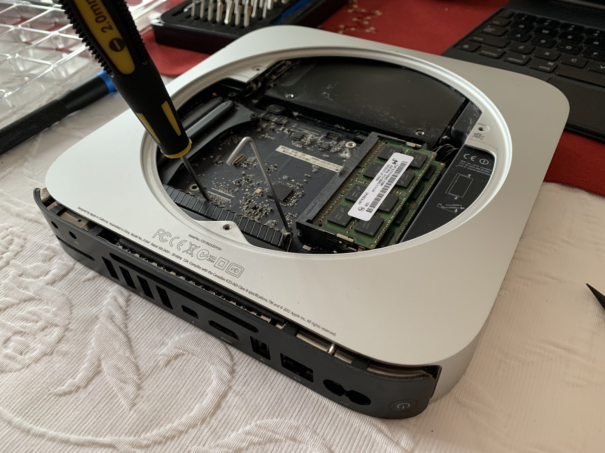
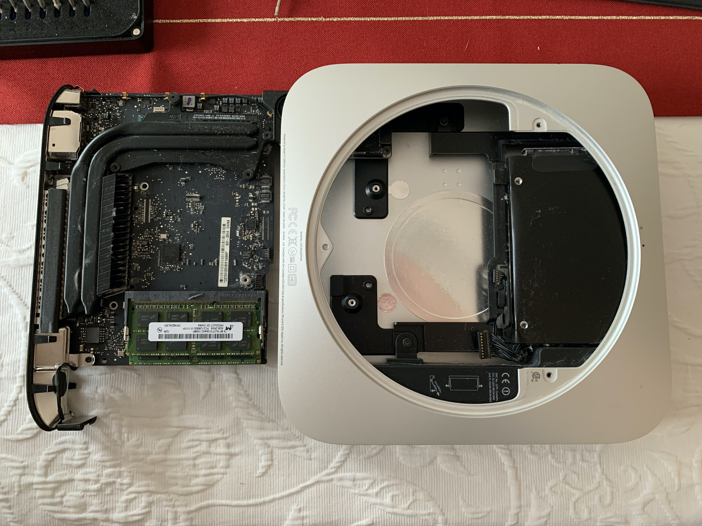
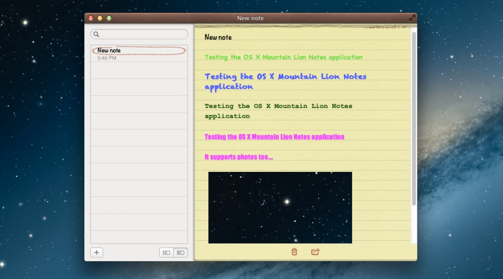
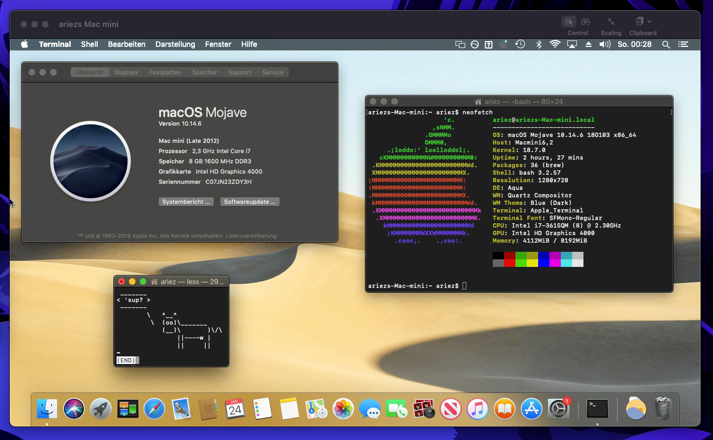

Mac Mini Home Lab
Recently, a family member replaced her aging 2012 Mac Mini with a custom gaming rig. Since then, it’s been lying around, and because it’s a decently specced machine for its time (Ivy Bridge i7, 8GB RAM) I figured maybe there’s some use I can put it to.
The main reasons for replacing it were lack of graphics power and it was extremely sluggish due to its old 5400rpm 2.5" HDD. However, CPU performance is still in perfectly usable realms. Hooray for years of Intel stagnation!
The HDD is an easy fix - I had an old SATA SSD lying around, and thanks to iFixit it was easy enough to swap. Getting into the Mini’s internals was actually pretty fun - having opened an Xbox, the Mini is surprisingly easy to work with.
It’s really tightly packed though, which means it’s got some unconventional quirks. For example, all mainboard connectors are nonstandard. Further, the mainboard slides out like a sled, but to get it out you need to insert levers into two special PCB cutouts. There’s a U-shaped tool, but you can make do with thin enough screwdrivers:
 
After that it’s smooth sailing. You just swap the drives, put everything back together, and boot into Internet Recovery by holding ⌘+R during boot. Internet Recovery will let you install whatever version of macOS your Mac was delivered with.
For me that was OS X 10.8. Now using that was a throwback. Everything still was skeuomorphic back then. Just look at the Notes app!

(source)
To upgrade from Mountain Lion, you’ll have to grab an installer. Using the app store directly does not work. I first installed Sierra and from there upgraded to Mojave via App Store. Support for the 2012 Mini was only dropped with Big Sur, so Catalina would’ve worked too, but I’m not too fond of its new security features such as notarization.
In the end, the system actually turned out pretty nice! Mojave is new enough to not lack any big features (ahem dark mode ahem), and with the SSD it’s feeling real snappy again. Plus the Mini’s design is timeless. I actually think it could do just fine as my main workhorse. Not bad for an 8 year old computer!
However, I’ve already got a workhorse, so what I’ve been thinking about doing as educational project is replacing my cloud VPS with running my own dedicated server on the Mini.
In fact, it would be a pretty fat upgrade to my server which is currently 1C/1G with like 20GB of disk, turning it into 4C/8G plus 240GB disk. And the Mini is a machine that is exceptionally well suited to the purpose: there is a basically identical server model, so it’s a reliable machine, it uses little power, it’s tiny, and it’s whisper quiet, yet relatively powerful.
Apple also has very neat remote sharing features built into macOS, so I can easily run the Mini headless and connect to it via my main machine. It’s literally a couple clicks to get to this:

However macOS is a bit of a nonstandard server OS, so I’ll have to see whether I can actually stick with it.
Here’s a few things I might do with it:
- Host an ArchiveBox
- NAS
- Nextcloud
- Time Machine Backups
- Zettelkasten
- This blog
- SSH server for my iPad
Some of these would do well to have more space than the crummy 240GB that my old SSD is offering. Luckily, the Mini’s old 1TB HDD is right there, and you can actually install two 2.5" drives in the Mini. You’re going to need a special connector for the second drive though (iFixit, AliExpress).
So once that’s done, the final result is a slick 4C/8G machine with 240GB of SSD and 1TB of archiving space for all of 8€. Pretty sweet deal if you ask me.
I’ll post an update once something is up and running.